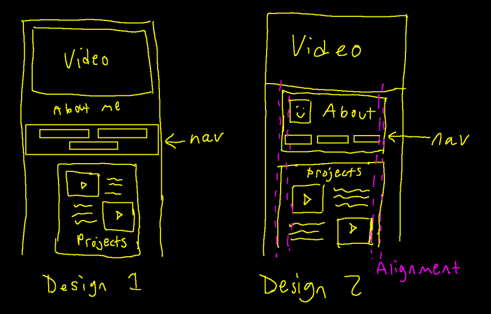

Design Notes
My current portfolio goal is to show my projects that display both my skills in art and my skills in programming. I'm hoping to show finished projects and artwork for recruiters to see, and also on-going projects to sell myself as an active worker. I will organize my site with sections for about me/contact info, projects, ongoing pieces, and my artwork. The video on my site will be an eye catching splash page when people visit it for the first time. The content being centered is not my favorite (and I'm going to revamp the site in the future), but it makes it incredible simple to scroll through the site and see alll the content.
I originally had a dark blue and grey color screen, but feedback mentioned it was a little depressing compared to how bright and colorful the artwork and content was. I decided to switch to a bolder, red color scheme, with panel having somewhat-neon-lit borders. I also adjusted the Projects panel; before it alternated which sides the videos and descriptions were on. This turned out to over-complicate the layout, as people's eyes were being directed all over the place. I originally did it because I thought it would make the layout feel more balanced between the left and right sides, but it turns out it made it feel more unbalanced! Putting the videos on the left, and the descriptions on the right fixed these issues.
All of the panels on the page utilize CSS Grid, so videos, descriptions, and images will all fit evenly on screen. My site is easy to update, its as simple as copying and pasting project descriptions, videos, and titles, and just changing whats written in them and the links in them. The panels will automatically adjust to fit the new content.
Roboto font by Christian Robertson, obtained through Google.